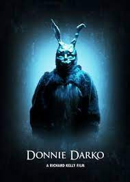
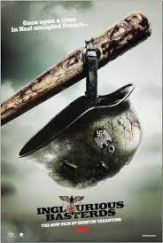
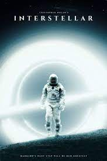
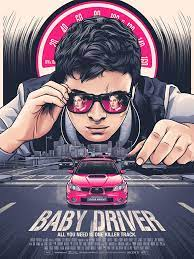
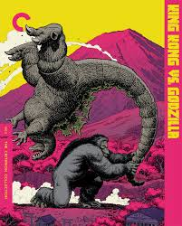
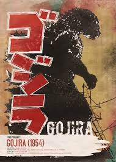
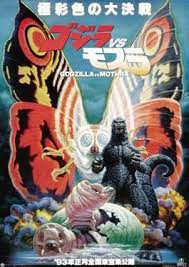
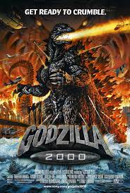
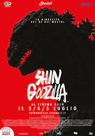

TOP 10 MOVIES
Donnie Darko

Inglorious Basterds

interstellar

Baby Driver

menu
King Kong vs Godzilla

Godzilla

Mothra vs Godzilla

Godzilla 2000

shin Godzilla

---Donnie Darko---
solid movie, enjoyed it, thought it was pretty cool.
Good movie for halloween, 10/10 recommend
---Inglorious Basterds---
Also solid movie, Tarentino did a great job.
---Interstellar---
Also also solid movie, tons of detail, awesome stuff.
---Baby Driver---
Also also also solid movie, cool scenes, amazing stuff.
---The Menu---
Also also also also solid movie, saw it recently, great stuff.
---King Kong vs Godzilla---
Also also also also also solid movie, super funny, Godzilla is cool.
---Godzilla---
Also also also also also also solid movie, Godzilla is super awesome, Godzilla is rad.
---Mothra vs Godzilla---
Also x6 solid movie, Godzilla destroys, Godzilla is a god.
---Godzilla 2000---
Also x7 solid movie, w Godzilla movie, Godzilla is a god.
---Shin Godzilla---
Also x8 solid movie, my favourite Godzilla, he's just too good.
| IMDB | Rotten Tomatoes | |
| King Kong vs Godzilla | 5.7 / 10 | 50% / 100% |
| Shin Godzilla | 6.8 / 10 | 86% / 100% |
| Godzilla | 7.5 / 10 | 93% / 100% |